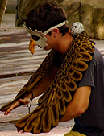
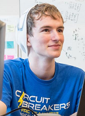
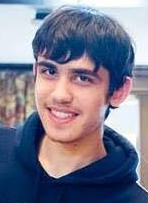

Nick Steelman
A rising E:C, Nick enjoys board games, Super Smash Bros, and Christmas music. In addition to Nick's solid contributions, his on-campus car afforded us the mobility to travel to Home Depot whenever we were in need of supplies.
Nick's learning goals consisted of implementing software with a larger mechanical system. He was able to achieve this goal by creating the MIDI File to Mechanical Memory conversion program, as well as being a member the electrical team, tasked with creating and driving the motors.
Nate Sampo
Nate, an E:C from New Hampshire, spends his free time playing and programming videogames, as well as attempting to combine fire arts and unicycling.
Nate's learning goal was to implement software and help fabricate our project. Nate achieved these goals by taking the lead on the instrument manufacturing team and website development, as well as helping create and assemble the sprint deliverables.

Jeremy Ryan
Jeremy is an aspiring electrical engineer who likes creating and playing all manner of games, runs a series of web comics with nearly 5000 followers, and is capable of creating amazing art.
Jeremy's learning goal was to do electrical design in the context of a mechanical system. To accomplish these goals, he applied himself to the motor and instrument team, where he lead the creation of the circuits to drive the motors, and helped produce and tune the instruments.

Paul Nadan
Paul, a rising aerospace engineer, loves firmware and robotic development as well as playing the trombone.
Paul's learning goal was to learn more about mechanical design in a complex system. As such, Paul co-lead the Mechanical Design and CAD team, and was one of the main team members responsible for manufacturing our sprint deliverables.
Daniel Alhadeff
Mechanical Engineer Daniel spends most of his spare time attempting to fix Paul's CAD and doing Github.
Daniel's learning goal was to practice collaborative mechanical design. In order to accomplish this goal, Daniel co-lead the Mechanical Design and CAD team. In addition, he manufactured a large portion of our sprint deliverables to gain more fabrication experience.